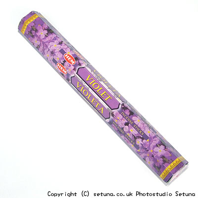

そのまま嗅ぐと確かにスミレ系の匂いがします。
火を点けると乾燥したパンジーを焼いた時の匂いがします。
はっきり言って、いい香りとは感じられません。
この焦げ臭い香りを解消するのに使ったのはヘム社の「マグノリア香」と「シバ香」です。
どちらもバイオレットの香りを感じさせてくれるものにしてくれました。
マグノリア香はスミレそのものの澄んだ甘い香りに変化させてくれます。
一方、シバ香は野に咲くスミレの優しい香りにしてくれます。
どちらを選んでも、バイオレット香は格段に良い香りに変化するのですが、一般的に店頭で手に入れやすいのはマグノリア香だと思います。
シバ香、マグノリア香どちらを使っても、残り香はあまり長く続かないタイプです。
